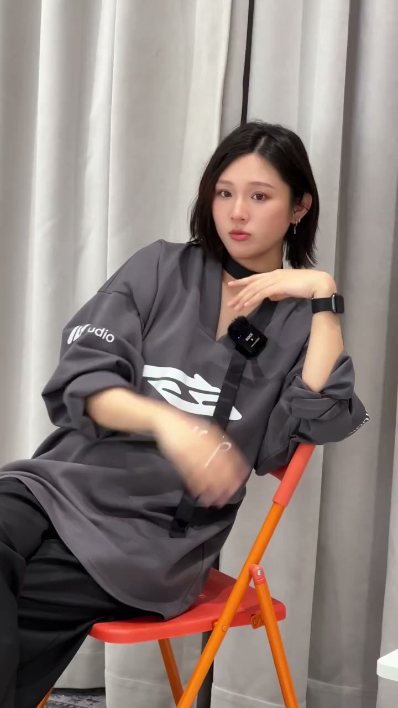
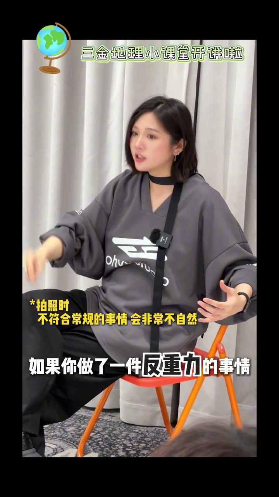

内容要点
这段视频围绕「拍不出松弛感❓关键得看手咋摆☝️」展开，按时间介绍其中的关键环节。不是这样子。
开场引入
不是这样子。这样子它都不好看。它一定要有支撑力。你自己要去控制它。给我懂了。那不就这样吗。这不就这样吗。很支撑啊。但你觉得它好看吗。你不是说又有支撑力才会好看吗

[00:00] 开场引入相关画面。
Opening introduction footage.
关键技巧展开
你没放松这个人再使劲儿呢。所以你的手再小臂。向上的时候要有支撑力。但是处于平行线以下的下行状态的时候。手腕处要保持完全放松。如果你想要松弛感。你一定是这样处理的。长裙子。我不是这样的。你的手拿包爱

[00:36] 关键技巧展开相关画面。
Footage expanding on the key techniques.
总结
你没放松这个人再使劲儿呢。